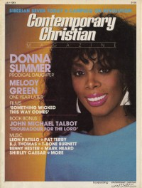

CMnexus
:
Contemporary Christian culture, music, and media.
Magazines
Profiles
Dove Awards
cmnexus.org
CM
nexus
→
Magazine list
→
CCM
→
Issues
Contemporary Christian Magazine
Jul 1983, vol. 6, iss. 1
< -- Prev
Issue list
Next -- >
Cover

Writers in this Issue
Kennedy, Dan
Larson, Bob
Styll, John W.
Wilson, Gord
Donna Summer
Cover Feature:
Donna Summer
Article:
Melody Green
John Michael Talbot
Pat Terry
B. J. Thomas
T-Bone Burnett
Benny Hester
Mark Heard
Shirley Caesar
CCM
Redesign by John W. Styll
Album Review:
Undercover
-
God Rules
by Gord Wilson
Styx
-
Kilroy Was Here
by Dan Kennedy
Perspectives:
"A Second Look At 'Gandhi'" by Bob Larson
Gandhi (film)
Relevant Links
Official web site of CCM
You may be able to find
CCM
in a library near you:
check
Worldcat
< -- Prev
Issue list
Next -- >
CMnexus
(noun)
The magazine index
of modern music
and Christianity
© 2011 CMnexus. Last updated May 2025.
Contact:
Rants and other correspondence to:
editor -AT- cmnexus
-DØT- org
About